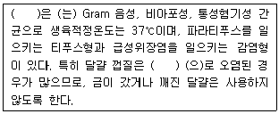
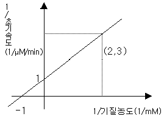

식품기사 (2010-03-07 기출문제)
1과목: 식품위생학
1. 식품위해요소중점관리기준에서 중요관리점(CCP)결정 원칙에 대한 설명으로 틀린 것은?
- 농ㆍ임ㆍ수산물의 판매 등을 위한 포장, 단순처리 단계 등은 선행요건으로 관리한다.
- 기타 식품판매업소 판매식품은 냉장ㆍ냉동식품의 온도관리 단계를 CCP로 결정하여 중점적으로 관리함을 원칙으로 한다.
- 판매식품의 확인된 위해요소 발생을 예방하거나 제거 또는 허용수준으로 감소시키기 위하여 의도적으로 행하는 단계까 아닐 경우는 CCP가 아니다.
- 확인된 위해요소 발생을 예방하거나 제거 또는 허용수준으로 감소시킬 수 있는 방법이 이후 단계에도 존재할 경우는 CCP 이다.
(정답률: 52%)

2. 식중독 원인조사에서 원인규명의 제한 사항이 아닌 것은?
- 식품은 여러 가지 성분으로 복잡하게 구성되어 원인물질과 원인균 규명이 어렵다.
- 환자 2인 이상에서 동일한 혈청형 또는 유전자형의 미생물이 검출되더라도, 식품에서 원인물질을 검출하지 못하면 식중독으로 판정할 수 없다.
- 식중독을 일으키는 균이나 독소 등은 식품에 극미량 존재하여 식품에서 원인균이 검출되지 않는 경우가 있다.
- 환자의 가검물 체취보다 병원에서의 치료가 선행될 경우 원인물질 검출이 어렵다.
(정답률: 82%)
3. HACCP의 일반적인 특성에 대한 설명으로 옳은 것은?
- 기록유지는 사고 발생시 역추적하기 위하여 시행되어야 하고 개인의 책임소지를 판단하는데 사용하는 것은 바람직하지 않다.
- 식품의 HACCP수행에 있어 가장 중요한 위험요인은 “화학적>생물학적>물리적” 요인 순이다.
- 공조시설계통도나 용수 및 배관처리계통도 상에서는 폐수 및 공기의 흐름 방향까지 표시되어야 한다.
- 제품설명서에 최종제품의 기준ㆍ규격작성은 반드시 식품공전에 명시된 기준ㆍ규격과 동일하게 설정하여야 한다.
(정답률: 77%)
4. 식중독 발생시 역학조사 방법으로 타당하지 않은 것은?
- 환자의 증상을 조사한다.
- 환자가 섭취한 음식물 내용을 조사하며, 동일식품을 섭취한 사람의 증상을 조사한다.
- 환자가 섭취한 식품을 취급한 조리실 등을 즉시 소독한다.
- 환자의 분변, 혈액 등 가검물을 채취한다.
(정답률: 85%)
5. ( )안의 균에 대한 설명으로 틀린 것은?

- 열에 강하여 일반 조리 방법으로는 살균되지 않는다.
- 개, 고양이 등 애완동물과 녹색거북이가 중요한 오염원이다.
- 저온 및 냉동상태에서 뿐만 아니라 건조에도 강하다.
- 적당한 습도가 되면 알껍질 내부에 침입하고 그 속에서 증식한다.
(정답률: 63%)
6. 식품 내에 존재하는 미생물에 대한 설명으로 틀린 것은?
- 곰팡이는 일반적으로 세균보다 먼저 생육한다.
- 수분활성도가 높은 식품에는 세균이 잘 번식한다.
- 수분활성도 0.6이하의 식품에서는 거의 모든 미생물의 생육이 저지된다.
- 당을 함유하는 산성식품에는 유산균이 잘 번식한다.
(정답률: 66%)
7. 타르색소에 대한 설명으로 틀린 것은?
- 석유의 타르 중에 함유된 벤젠이나 나프탈렌으로부터 합성한다.
- 식용색소 청색 제1호 및 적색 제3호 는 빛에 불안정하다.
- 식품에 사용이 허용된 것은 수용성 산성타르계색소이다.
- 독성이 강한 것들이 많다.
(정답률: 49%)
8. 대장균을 MPN법으로 검사할 때 사용하는 배지의 당은?
- 유당
- 설탕
- 맥아당
- 과당
(정답률: 84%)
9. 테트로도톡신(tetrodotoxin)에 대한 설명으로 틀린 것은?
- 단백질분해효소에 의해 쉽게 분해된다.
- 약염기성 물질이다.
- 물에 녹기 어렵다.
- 열에 안정하다.
(정답률: 64%)
10. 독소형 식중독에 대한 설명으로 옳은 것은?
- 식품에서 성장한 병원성세균을 섭취하여 발생된다.
- 포도상구균에 의한 식중독이 대표적이다.
- 감염형 식중독과 비교하여 잠복기가 비교적 길다.
- 일반인의 경우 독소가 장내에서 생성되어 증상이 나타난다.
(정답률: 66%)
11. 장티푸스에 대한 설명으로 틀린 것은?
- 원인세균은 Gram 염색 음성간균으로 운동성이 있다.
- 잠복기는 대체로 10일 정도이며, 고열에 비해 맥박은 느리다.
- 파라티푸스 경우보다 병독 증세가 강하다.
- 장티푸스 환자는 소변으로 균이 배출되지 않는다.
(정답률: 84%)
12. 유기인제 농약에 의한 중독기작은?
- Cytochrome oxidase저해
- ATPase 저해
- Cholinesterase 저해
- FAC oxidase저해
(정답률: 78%)
13. 내분비계 장애물질에 대한 설명으로 틀린 것은?
- 체내의 항상성유지와 발달과정을 조절하는 생체내 호르몬의 작용을 간섭하는 내인성 물질이다.
- 일반적으로 합성 화학물질로서 물질의 종류에 따라 교란시키는 호르몬의 종류 및 교란방법이 다르다.
- 쉽게 분해되지 않고, 안정하여 환경 혹은 생체내에 지속적으로 수년간 잔류하기도 한다.
- 수용체 결합과정에서 호르몬 모방작용, 차단작용, 촉발작용, 간접영향 작용 등을 한다.
(정답률: 72%)
14. 납, 카드뮴 등의 정량에 사용되는 기기는?
- Inductively Coupled Plasma(ICP)
- Liquid Chromatography(LC)
- Gas Chromatography(GC)
- Polymerase Chain Reaction(PCR)
(정답률: 64%)
15. 식중독의 발생동향이 아닌 것은?
- 바이러스성 식중독은 감소 추세이다.
- 급식과 외식의 증가로 건수와 환자수가 증가하고 있다.
- 지구 온난화로 인한 기온 상승으로 식중독 발생이 지속적으로 증가할 것으로 예상된다.
- 음식점은 병원성대장균, 장염비브리오, 황색포도상 구균등에 의해 주로 발생한다.
(정답률: 83%)
16. 식품공장에서 미생물 수의 감소 및 오염물질 제거 목적으로 사용하는 위생처리제가 아닌 것은?
- Hypochlorite
- Chlorine dioxide
- 제4급 암모늄 화합물
- Ascorbic acid
(정답률: 78%)
17. 황색포도상구균에 대한 설명으로 틀린 것은?
- 토양, 하수 등의 자연계에 널리 분포하며 건강인의 약 30%가 이 균을 보균하고 있다.
- 건조상태에서 저장성이 강하여 식품이나 가검물 등에서 장기간 생존한다.
- 소금농도가 높은 곳에서 증식할 수 없으므로 소금물에 씻으면 식중독이 예방된다.
- 식품제조에 필요한 모든 기구와 기기를 청결히 유지하여 2차 오염을 방지해야 한다.
(정답률: 76%)
18. 수인성 전염병에 속하지 않는 것은?
- 장티푸스
- 이질
- 콜레라
- 파상풍
(정답률: 80%)
19. 대상식품, 소관부처, 관련법률의 연결이 틀린 것은?
- 먹는물-환경부- 먹는물 관리법
- 소금- 농림수산식품부, 지식경제부-염관리법
- 학교급식-보건복지(가족)부-식품위생법
- 축산물 및 축산가공식품-농림축산식품부-축산물가공처리법
(정답률: 67%)
20. 반감기는 짧으나 젖소가 방사능 강하물에 오염된 사료를 섭취할 경우 쉽게 흡수되어 우유에서 바로 검출되므로 우유를 마실 때 문제가 될 수 있는 방사성 물질은?
- Sr89
- Sr90
- Cs137
- I131
(정답률: 80%)
2과목: 식품화학
21. 일반 식용유지에 그 함량이 가장 적은 지방산은?
- 올레산(oleic acid)
- 부티르산(butyric acid)
- 팔미트산(palmitic acid)
- 리놀레산(linoleic acid)
(정답률: 45%)
22. 유지를 가열할 때 유지의 표면에서 엷은 푸른 연기가 발생할 때의 온도를 무엇이라 하는가?
- 발연점
- 연화점
- 연소점
- 인화점
(정답률: 83%)
23. 실온에서 분산매가 고체이고 분산질이 액체인 식품은?
- 버터
- 젤리
- 마요네즈
- 전분현탁액
(정답률: 61%)
24. β-amylase가 작용할 수 있는 전분 내의 결합은?
- α-1,4 glycoside결합
- β-1,4 glycoside결합
- α-1,6 glycoside결합
- β-1,6 glycoside결합
(정답률: 70%)
25. 감미가 강한 순서대로 나열된 것은?
- sucrose > glucose > maltose > lactose
- glucose > maltose > sucrose > lactose
- sucrose > maltose > glucose > lactose
- glucose > sucrose > maltose > lactose
(정답률: 72%)
26. 우유에 대한 설명으로 옳은 것은?
- 살균방법 중 고온단시간살균법(HTST)은 130~150℃에서 0.5~5초간 살균하는 것이다.
- 우유에 산을 가하였을 때 침전물이 생기는 것은 유당(lactose)이 응고하기 때문이다.
- 유당 불내증(유당소화장애증, lactose intolerance)은 락타아제(lactase)가 적게 분비되거나 생성되지 않아서 생긴다.
- 우유의 주된 탄수화물인 젖당은 일반적인 당류 중 감미도가 높고 물에 잘 용해되어 아이스크림 제조에 많이 이용된다.
(정답률: 68%)
27. 저칼로리의 설탕대체품으로 이용되면서 당뇨병 환자들을 위한 식품에 이용할수 있는 성분은?
- 자일리톨
- 젖당
- 맥아당
- 갈락토오스
(정답률: 85%)
28. 대두 단백질 식품에서 제한아미노산으로 가장 문제되는 필수아미노산은?
- lysine
- tryptophan
- methionine
- phenylalanine
(정답률: 59%)
29. 갈변화(Caramellization)중 1mole의 hexose에서 탈수 되는 물은 몇 mole인가?
- 1
- 2
- 3
- 4
(정답률: 40%)
30. 스트렉커 반응(strecker reaction)과 관련이 깊은 것은?
- 단백질 정성반응
- 탄수화물 정성반응
- 지방의 자동산화반응
- 갈색화반응
(정답률: 60%)
31. 근육에 존재하는 알부민(albumin)계의 단백질은?
- lactalbumin
- myogen
- ovalbumin
- serum albumin
(정답률: 64%)
32. 고체식품에서 항복응력(yield stress)을 초과할 때까지 영구변형이 일어나지 않는 것은?
- 탄성체
- 가소성체
- 점탄성체
- 완형체
(정답률: 71%)
33. 두부를 만들기 위해 두유를 만들어 가열할 때 거품이 발생하였다면, 거품의 원인성분은?
- 글로불린(globulin)
- 티로신(tyrosine)
- 라이신(lysine)
- 사포닌(saponin)
(정답률: 67%)
34. 즉석밥 제조시 밥맛이 좋고 영양가가 높은 제품을 만들기 위한 방법이 아닌 것은?
- 도정을 미리 해 둔 쌀을 이용하지 않고 밥을 짓기 2~3일전에 도정한 쌀을 이용하여 밥을 만든다.
- 쌀을 보관함에 있어 수분과 온도가 매우 중요하므로 상대습도 90%에 22℃를 일정하게 유지하여 저장하면 쌀알이 부서지는 현상을 막을 수 있다.
- 0분도정을 실시하면 현미를 확보할 수 있으나 밥맛에 영향을 주고, 10분도정을 하면 하얀 백미를 확보할 수 있으나 영양 손실이 우려되어 7~9분 정도 도정을 실시하는 것이 좋다.
- 쌀바구미가 생성되면 밥맛에 영향을 주므로 해중의 침투를 차단하고 곡류의 수분을 13% 이하로 유지하며 적정 온도 조건을 유지하도록 한다.
(정답률: 75%)
35. 과일주스 제조 공정 중 「살균온도, 살균시간, 살균 pH」변화에 의한 제품의 맛을 관능검사하였다. 그 결과 위의 3가지 요인들을 이용하여 제품 맛에 대한 함수식을 만들었다. 이와 같이 여러 개의 독립변수들로 하나의 종속변수를 설명하는 함수식을 만들 때 사용되는 통계 분석법은?
- 주성분분석
- 분산분석
- 요인분석
- 회귀분석
(정답률: 77%)
36. 길이 10.0㎝인 껌을 시중에서 구입한 자(measure)를 이용하여 5회 측정하였다. 그 값은 각각 7.79, 7.82, 7.79, 7.81, 7.80 ㎝이었다. 이와 같은 경우의 분석 결과는 어떻게 해석할 수 잇Sms가?
- 정확도(accuracy)는 상대적으로 낮고 재현성(precision)도는 상대적으로 낮다.
- 정확도(accuracy)는 상대적으로 낮고 재현성(precision)도는 상대적으로 높다.
- 정확도(accuracy)는 상대적으로 높고 재현성(precision)도는 상대적으로 낮다.
- 정확도(accuracy)는 상대적으로 높고 재현성(precision)도는 상대적으로 높다.
(정답률: 78%)
37. 조란류의 특성에 대한 설명으로 옳은 것은?
- 노른자 부위의 인지질에는 레시틴, 세팔린 드이 있으며 이들은 유화제 역할을 한다.
- 비오틴과 결합하는 달걀단백질에는 오보뮤코이드가 있다.
- 단백질 분해효소의 저해제인 trypsin inhibitor는 열변성을 시켜 그 기능을 약화시킬 수 있다.
- 날달걀의 아비딘 성분은 열처리 후에도 거의 변성되지 않고 다른 성분들과 잘 결합하지 않는다.
(정답률: 58%)
38. 채소류의 공통적 향기 성분과 거리가 먼 것은?
- 에스테르(ester)류
- 아민(amine)류
- 카보닐(carbonyl)류
- 알코올(alcohol)류
(정답률: 63%)
39. 자당(sucrose)를 포도당과 과당으로 가수분해하는 효소는?
- kinase
- aldolase
- enolase
- invertase
(정답률: 84%)
40. pH 4.6에서 침전되는 우유 단백질은?
- 락토글로불린
- 혈청알부민
- 면역글로불린
- β-카제인
(정답률: 78%)
3과목: 식품가공학
41. 제빵시에 효모가 관여하는 반응은?
- C6H12O6 → 2C2H5OH + 2CO2
- C6H12O6 → C4H8O2 + 2CO2 + 2H2
- C6H5OH + O2 → CH3COOH + H2O
- C6H12O6 → 2C3H6O3
(정답률: 66%)
42. 레토르트의 bleeder역할이 아닌 것은?
- 증기와 더불어 혼입하는 공기를 제거한다.
- 레토르트내의 증기를 순환시킨다.
- 온도계의 하부에 응결하는 수분을 제거하여 정확한 온도를 지시하도록 한다.
- 레토르트내의 압력을 급격히 높게 하여 통조림관이 찌그러지는 것을 방지한다.
(정답률: 50%)
43. 피단은 알의 어떠한 특성을 이용한 제품인가?
- 기포성
- 유화성
- 알칼리 응고성
- 효소작용
(정답률: 76%)
44. 채소류의 건제품을 제조할 때 블랜칭(blanching)하는 목적이 아닌 것은?
- 신선미 부여
- 점질물 형성물질 제거
- 악취물질 제거
- 조직의 유연화
(정답률: 64%)
45. 식육의 육괴를 염지한 것이나 이에 결착제, 조미료, 향신료 등을 첨가한 후 숙성ㆍ건조하거나 훈연 또는 가열처리한 것 (육함량 85%이상, 전분 5%이하)은?
- 분쇄가공육품
- 소시지
- 프레스햄
- 베이컨류
(정답률: 52%)
46. 식품포장 재료의 용출시험 항목이 아닌 것은?
- 페놀(phenol)
- 포르말린(formalin)
- 잔류농약
- 중금속
(정답률: 63%)
47. 보통 산분해 간장은 단백질 원료를 산으로 가수분해하여 얻는다. 이때 주로 사용하는 산은?
- HNO3
- H2SO4
- H2CO3
- HCl
(정답률: 65%)
48. 지방함량20%인 쇠고기 10Kg과 지방함량30%인 돼지고기를 혼합하여 지방함량22%의 혼합육을 만들 때 돼지고기의 양은?
- 2.3 kg
- 2.4 kg
- 2.5 kg
- 2.6 kg
(정답률: 52%)
49. 콩을 이용하여 청국장을 제조하였으나 끈끈한 점질물이 생성되지 않고 부패가 진행되었다. 청국장이 제대로 발효되지 않은 이유가 아닌 것은?
- 지나치게 높은 온도에서 발효하였다.
- 청국장 제조시 사용하는 볏짚을 물로 깨끗이 씻은 후 살균 처리하여 사용하였다.
- 콩의 침지시간이 길었다.
- Bacillus natto를 직접 배양하여 첨가하여 제조하였다.
(정답률: 54%)
50. 마요네즈의 원료가 아닌 것은?
- 난황
- 우유
- 샐러드유
- 식초
(정답률: 71%)
51. 수산화나트륨을 가하여 유리되는 지방산을 비누화하여 제거하는 유지정제법은?
- 알칼리법
- 흡착법
- 황산법
- 여과법
(정답률: 75%)
52. 도살 후 일반적으로 최대경직시간이 가장 짧은 고기는?
- 닭고기
- 쇠고기
- 양고기
- 돼지고기
(정답률: 83%)
53. 통조림의 진공도를 재는 vacuum tester를 꽂는 곳은?
- flange
- can body
- expansion ring
- knotch
(정답률: 68%)
54. 떫은 감의 탈산법이 아닌 것은?
- 열수법
- 알코올법
- 가스법
- 동결법
(정답률: 31%)
55. 우유의 단백질은?
- ovalbumin
- lactalbumin
- glutenin
- oryzenin
(정답률: 78%)
56. 분유의 품질에 관여하는 지표가 아닌 것은?
- 기포성
- 용해도
- 보존성
- 입자의 크기
(정답률: 64%)
57. 고구마 녹말 제조시 녹말의 순도를 낮게 하는 요인과 거리가 먼 것은?
- 단백질 함량
- 고른 녹말입자
- 수지성분
- 탄닌 성분
(정답률: 52%)
58. 유지를 추출할 때 착유율을 높이기 위한 방법으로 가장 적합한 것은?
- 용매로 먼저 추출한 후 기계적 압착을 한다.
- 기계적 압착을 한 후 용매로 추출한다.
- 용매 추출 방법으로만 추출한다.
- 기계적 압착 방법으로만 추출한다.
(정답률: 69%)
59. Bacillus subtilis의 D121=0.50 min이며, 가열 살균시 균체의 살균속도는 1차 반응식으로 표시된다. 만약 균체가 최초 100000마리/ml인 액체식품을 121℃에서 가열 살균하여 10마리/ml 로 만들려면 몇 분간 가열해야 하는가?
- 1.5분
- 2.0분
- 2.5분
- 3.0분
(정답률: 54%)
60. 전자레인지용 용기에 대한 설명으로 틀린 것은?
- 포장재는 마이크로파 에너지를 열에너지로 쉽게 전활할 수 있어야 한다.
- 마이크로파는 금속 포장재에 부딪치면 반사한다.
- 마이크로파는 유리, 도자기, 플라스틱 포장재에 닿으면 투과한다.
- PET필름에 금속을 얇게 증착하여 발열시킬 수 있다.
(정답률: 44%)
4과목: 식품미생물학
61. 사상균에서 발견되며 식품의 갈변방지, 통조림 산소제거 등에 이용되는 효소는?
- protease
- catalase
- lysozyme
- glucose oxidase
(정답률: 67%)
62. 효모의 증식에 대한 설명으로 틀린 것은?
- 효모의 증식법에는 영양증식과 포자 형성에 의한 증식이 있다.
- 효모의 영양증식 중에는 출아증식이 효모의 대표적인 증식법이다.
- 효모의 증식법에는 분열볍과 출아분열이 대부분을 차지한다.
- 효모가 무성적으로 포자를 형성하는 데는 단위생식, 위접합, 사출포자, 분절포자 등이 있다.
(정답률: 40%)
63. 미생물을 이용하여 구연산(citric acid)을 생산할 때 oxaloacetic acid는 무엇으로부터 만들어 지는가?
- acetoin
- acetic acid
- malic acid
- pyruvic acid
(정답률: 48%)
64. 세균의 균수를 측정하는 방법에 대한 설명으로 틀린 것은?
- 총균수를 측정하기 위해서는 Thoma의 혈구계수기(Haematometer)가 사용된다.
- 그람염색법으로 생균과 사균을 구별할 수 있다.
- 비교적 미생물 농도가 낮은 시료는 필터(filter)법을 이용한다.
- 일반적으로 생균수는 평판 배양법으로 측정할 수 있다.
(정답률: 71%)
65. 자낭균류 자낭과의 유형에서, 성숙했을 때 자실층이 외부로 노출되는 것은?
- 폐자낭각
- 자낭반
- 소방
- 자낭각
(정답률: 50%)
66. 주어진 온도조건에서 미생물 수를 90%감소시키는데 소요되는 시간(분)을 나타내는 값은?
- Z값
- D값
- R값
- S값
(정답률: 74%)
67. 부패미생물에 의한 부패산물이 아닌 것은?
- 암모니아
- 아민
- 트리메틸아민
- 아세트산
(정답률: 67%)
68. 식품검사 항목 중 대장균 검사에 이용되는 배지들로 구성된 것은?
- 젖당 bouillon 배지, EMB 배지, thioglycollate 배지
- 표준한천 배지, BGLB 배지, 포도당 bouillon 배지
- 젖당 bouillon 배지, BGLB 배지, EMB 배지
- EMB 배지, 간 bouillon 배지, Endo 배지
(정답률: 67%)
69. 클로렐라에 관한 설명 중 틀린 것은?
- 건조물은 약 50%가 단백질이고 아미노산과 비타민이 풍부하다.
- 클로렐라는 단세포 갈조류이다.
- 무성생식과 유성생식을 모두 한다.
- 세포의 지름은 5 ~ 8㎛이다.
(정답률: 75%)
70. 당류의 발효성 실험법으로 적합하지 않은 것은?
- Lindner법
- Durham tube 법
- Einhorn tube법
- Stelling-Dekker법
(정답률: 59%)
71. 간장 제조시 종균으로 쓰이는 균주는?
- Aspergillus flavus
- Aspergillus nidulans
- Aspergillus niger
- Aspergillus oryzae
(정답률: 65%)
72. 미생물의 순수분리 방법이 아닌 것은?
- 평판 배양법
- Lindner의 소적 배양법
- Micromanipulater를 이용하는 방법
- 모래배양법(토양배양법)
(정답률: 60%)
73. 내염성이 강하고 간장에 존재하는 젖산균은?
- Pediococcus cerevisiae
- Pediococcus halophilus
- Streptococcus cremoris
- Lactobacillus bulgaricus
(정답률: 57%)
74. 폴리옥소트로픽 변이주(polyauxotrophic mutant)란?
- 여러 가지 무기영양 변이균주
- 두 가지 이상의 영양소 요구성 변이균주
- 여러 가지 자력 영양균
- 여러 가지 화학 영양균
(정답률: 73%)
75. 미생물 세포를 구성하는 수분에 관한 설명 중 틀린 것은?
- 미생물 세포의 수분함량은 보통 75 ~ 85% 이다.
- 포자는 영양세포에 비하여 결합수 함량이 높다.
- 포자는 영양세포에 비하여 수분함량이 적다.
- 미생물세포는 자유수 함량이 높을수록 내열성이 높다.
(정답률: 63%)
76. 유전자 재조합 기술에서 벡터로 사용될 수 있는 것은?
- 용원성 파아지(temperate phage)
- 용균성 파아지(virulent phage)
- 탐침(probe)
- 프라이머(primer)
(정답률: 64%)
77. 식품공장에서의 파아지(phage) 예방법으로 적합하지 않은 것은?
- 2종 이상의 균주 조합 계열을 만들어 2 ~ 3일마다 바꾸어 사용한다.
- 내성균주를 사용한다.
- 공장 내의 공기를 자주 바꾸어 주거나 온도, pH등의 환경조건을 변화시킨다.
- 공장과 주변을 청결히 하고 용기의 가열ㆍ살균, 약제 사용 등을 철저히 한다.
(정답률: 73%)
78. 건조상태에서 저장 중인 곡물에서 볼 수 있는 미생물은?
- Aspergillus glaucus
- Bacillus cereus
- Leuconostoc mesenteroides
- Pseudomonas fluorescens
(정답률: 56%)
79. 효모균의 동정(同定)과 관계 없는 것은?
- 포자의 유무와 모양
- 라피노스(raffinose) 이용성
- 편모염색
- 피막형성
(정답률: 62%)
80. 영양요구변이주(auxotroph)의 검출 방법이 아닌 것은?
- Replica 법
- 농축법
- 여과농축법
- 융합법
(정답률: 59%)
5과목: 생화학 및 발효학
81. 액체배양법에 의한 효소생산에 대한 설명으로 틀린 것은?
- 액체배양법은 세균, 효모 배양에 적합하다.
- 고체배양법보다 일반적으로 역가가 높다.
- 기계화가 가능하다.
- 좁은 면적을 활용할 수 있다.
(정답률: 60%)
82. 발효공업에서 폐수의 특성이 아닌 것은?
- BOD가 높다.
- pH가 산성이다.
- 생물학적 처리가 불가능하다.
- 회수 처리시 농도가 감소된다.
(정답률: 64%)
83. 지질을 구성하는 지방산에 대한 설명으로 틀린 것은?
- α위치에는 친수성기(-COOH)가 ω위치에는 소수성기(-CH3)가 결합된 양친매성 화합물이다.
- 불포화지방산은 이중결합을 함유하며 융점이 낮아 식물성유는 실온에서 액상형으로 존재한다.
- 필수지방산은 체내 합성이 되지 않는 oleic acid, linoleic acid, linolenic acid로 구성된다.
- 생리활성이 보고되는 ω-3지방산에는 linolenic acid, DHA, EPA 등이 대표적이다.
(정답률: 63%)
84. 강한 산이나 염기로 처리하거나 열, 이온성세제, 유기용매 등을 가하여 단백질의 생물학적 활성이 파괴되는 현상은?
- 정제(purification)
- 용해(hydrolysis)
- 결정화(crystalization)
- 변성(denaturation)
(정답률: 77%)
85. 설탕용액에서 생장할 때 dextran을 생산하는 균주는?
- Leuconostoc mesenteroides
- Aspergillus oryzae
- Lactobacillus delbrueckii
- Rhizopus oryzae
(정답률: 62%)
86. 핵산의 무질소 부분 대사에 대한 설명으로 옳은 것은?
- 인산은 대사 최종산물로서 무기인산염 형태로 소변으로 배설된다.
- 간, 근육, 골수에서 요산이 생성된 후 소변으로 배설된다.
- NH3를 방출하면서 분해되고 요소로 합성되어 배설된다.
- pentose는 최종적으로 분해되어 allantoin으로 전환되어 배설된다.
(정답률: 44%)
87. 약 ㆍ 탁주 제조용 누룩 제조에 사용되는 황국균은?
- Aspergillus niger
- Aspergilus oryzae
- Rhizopus delemar
- Rhizopus oryzae
(정답률: 69%)
88. 아래는 어느 한 효소의 초기(반응) 속도와 기질 농도와의 관계를 표시한 것이다. 이 효소의 반응속도 항수인 Km 과 Vmax 값은?

- Km =1, Vmax=1
- Km =2, Vmax=2
- Km =1, Vmax=2
- Km =2, Vmax=1
(정답률: 63%)
89. 단백질의 생합성에 대한 설명으로 옳은 것은?
- 핵에서 이루어진다.
- 아미노산의 배열은 r-RNA에 의해 결정된다.
- 각각의 아미노산에 대한 특이한 t-RNA가 필요하다.
- RNA 중합효소에 의해서 만들어진다.
(정답률: 53%)
90. 비당화 발효법으로 알코올 제조가 가능한 원료는?
- 섬유소
- 곡류
- 당밀
- 고구마 ㆍ감자 전분
(정답률: 59%)
91. 증식수율의 주요 의미로 옳은 것은?
- 소비된 탄소원에 대한 증식된 균체량
- 소비된 질소원에 대한 증식된 균체량
- 소비된 산소에 대한 증식된 균체량
- 소비된 탄산가스에 대한 증식된 균체량
(정답률: 61%)
92. 광합성의 암반응(calvin-reaction)으로부터 포도당이 합성될 때 관련된 중간산물이 아닌 것은?
- 3-phosphoglycerate
- xylose-5-phosphate
- ribulose-1,5-diphosphate
- glyceraldehyde-3-phosphate
(정답률: 50%)
93. 괴혈병 치료 등의 생리적인 특성을 갖고 있으며 생물체내에서 환원제(reducing agent)로 작용하는 비타민은?
- vitamin D
- vitamin K
- cobalamin
- ascorbic acid
(정답률: 67%)
94. 글리코겐 대사에 대한 설명으로 틀린 것은?
- 탈인산화된 glycogen synthetase asms 비활성형이다.
- glycogen synthetse는 UDP-glucose로부터 α-1,4 결합으로 전이시킨다.
- 글리코겐을 분해하는 기안산분해효소(phosphorylase)는 phosphorylase kinase에 의해 활성화된다.
- 근육세포는 glucose-6-phosphatase를 함유하지 않아 glucose-6-phosphate를 유리 glucose로 바꿀 수 없다.
(정답률: 39%)
95. 포도당(glucose) 100 g/L를 사용하여 빵효모를 생산하려고 한다. 발효 후에 에탄올(ethanol)이 부산물로 10 g/L 생산되었다면, 이 때 생산된 균체의 양은 얼마인가? (단. 균체 생산수율은 0.5이다.)
- 약 35 g/L
- 약 40 g/L
- 약 45 g/L
- 약 50 g/L
(정답률: 44%)
96. 해당계 및 TCA 회로와 관련된 유기산 발효에서 생산물과 원료의 연결이 틀린 것은?
- lactic acid - glucose
- lactic acid - sucrose
- citric acid - sucrose
- citric acid- fumaric acid
(정답률: 42%)
97. 초산발효균으로서의 Gluconobacter sp.의 장점은?
- 발효수율이 높다.
- 발효속도가 빠르다.
- 고농도의 초산을 얻을 수 있다.
- 과산화가 일어나지 않는다.
(정답률: 35%)
98. 발효과정 중에서의 수율(yield)에 대한 설명으로 옳은 것은?
- 단위 균체량에 의해 생산된 생산물량
- 단위 발효시간당 생산된 생산물량
- 발효공정에 투입된 단위 원료량에 대한 생산물량
- 단위 균체량과 원료량에 대한 생산물량
(정답률: 64%)
99. 전분질 원료로부터 주정을 제조하는 방법이 아닌 것은?
- amylo 법
- reuse법
- 국법
- 절충법
(정답률: 50%)
100. DNA에 대한 설명으로 틀린 것은?
- DNA는 두 줄의 polynucleotide가 서로 마주부면서 오른쪽으로 꼬여 있다.
- DNA 염기쌍은 A:C, T:G의 비율이 1:1이다.
- DNA는 세포내에서 유리형으로 존재하지 않는다.
- 완전하게 DNA의 이중나선축이 1회전하는 거리는 34Å이다.
(정답률: 65%)